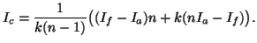
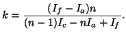

Comment vaincre le chiffre de Vigenère?
Le système polyalphabétique de Vigenère résista pendant environ 3 siècles, jusqu'à ce que le mathématicien britannique Charles Babbage, connu notamment pour ses machines à différence, élabore la théorie de son décodage, vers 1854. Cette découverte assure la suprématie de l'Angleterre, et est gardée secrète alors qu'à l'automne 1854, l'Angleterre, la France, la Turquie et la Sardaigne déclarent la guerre à la Prusse. Ce n'est qu'en 1863 qu'un ancien major de l'armée prusse, Friedrich Kasiski, publie la méthode dans son livre de 95 pages Die Geheimschriften und die Dechiffrir-Kunst.
Supposons par exemple que nous ayons le message codé suivant :
On suppose que l'on sait que ce message a été obtenu à partir du texte clair en appliquant le chiffre de Vigenère avec une clé de longueur 3. Alors, la 1ère lettre, la 4ème, la 7ème, etc... ont toutes été codées en utilisant la même lettre de la clé. Autrement dit, elles ont été codées en utilisant le même décalage de César.
On va alors séparer le texte codé en 3 parties : la première comporte les lettres 1,4,7,... la seconde les lettres 2,5,8,... la troisième les lettres 3,6,9,.... On trouve :
deuxième ligne : CFDFQSSO…
troisième ligne : CQWVWCXA…
Chaque ligne a alors été chiffrée avec une méthode de substitution extrêmement simple : celle du chiffre de César. On va pouvoir retrouver le décalage opéré par une simple étude statistique. Par exemple, on cherche la lettre la plus fréquente qui apparait dans la première ligne. Il s'agit d'un V. Il y a de fortes chances de penser que le V représente en réalité la lettre E, et donc, puisqu'on a affaire à un chiffre de César, que R représente un A, que S représente un B, etc… On fait le même travail pour chaque ligne (on trouve que la clé employée est ROI), puis on remet les 3 lignes ensembles, en prenant tour à tour une lettre de chque ligne. On retrouve bien le texte clair, qui est ici (remis en forme) :
(extrait de Les noces barbares, de Yann Queffélec).
L'idée de Kasiski (et de Babbage avant lui) est d'analyser les séquences de 3 lettres répétées dans le texte codé, et de se dire que ces répétitions ne sont pas fortuites. Si une séquence de 3 lettres est répétée dans le message codé avec une distance d, on peut se dire qu'il s'agit de la même séquence de 3 lettres du texte initial, codée avec la même séquence de lettres de la clé. Par conséquent, si m est la longueur de la clé, pour que les 2 séquences soient codées avec les mêmes lettres de la clé, il faut que m divise d.
On peut donc prendre pour m le pgcd des distances des séquences répétées. Bien sûr, il faut faire preuve de discernement dans l'application de cette méthode, en ne tenant compte que des données significatives. Faisons l'analyse sur le texte suivant :
| Séquence | Position | Distance | Décomposition |
| COX | 11-140 | 129 | 3.43 |
| FCS | 16-99 | 83 | 83 |
| ZRM | 20-83 | 63 | 327 |
| FMJ | 24-162 | 138 | 2.3.23 |
| CLB | 37-46 | 9 | 32 |
| KCC | 44-92 | 48 | 233 |
| WTV | 87-133 | 46 | 2.23 |
| CCJ | 93-126 | 33 | 3.11 |
| ICC | 110-155 | 45 | 32.5 |
| MJI | 136-163 | 27 | 33 |
Clairement, le diviseur commun est 3, qui apparait presque partout (il n'apparait pas pour la séquence FCS, mais celle-ci n'est pas significative, à moins d'imaginer que la longueur de la clé ne soit 83!). La longueur de la clé est donc 3. A titre d'exerice, on pourra appliquer la méthode décrite au paragraphe précédent pour retrouver les 3 lettres de la clé.
Cette méthode était vraiment révolutionnaire lorsqu'elle est apparue. Depuis, on est capable de faire mieux, et surtout de façon plus automatisée…
On appelle indice de coïncidence d'un texte la probabilité pour que, si on prenne deux lettres au hasard dans ce texte, ce soient les mêmes. Si le texte est composé de n lettres, choisis dans l'alphabet A,...,Z, son indice de coïncidence Ic est donnée par la formule :
où $n_A$ désigne le nombre de A dans le texte - explication de la formule - .
Dans une langue usuelle, les lettres n'apparaissent pas toutes avec la même fréquence. C'est pourquoi l'indice de coïncidence d'un texte écrit en français (=If) est très supérieur à l'indice de coïncidence d'un texte aléatoire (=Ia) où les lettres ont une fréquence d'apparition identiques. Ainsi une analyse statistique sur de nombreux textes a donné If=0,074, tandis qu'un petit calcul donne Ia=0,038 (=1/26) - explication du calcul.
Revenons au chiffre de Vigenère. Supposons qu'on ait un texte codé de n lettres, la clé de codage faisant k lettres. On montre (explication) que l'indice de coïncidence du texte peut être approché par :  L'inversion de cette formule donne : 
Comme on peut calculer l'indice de coïncidence du texte, on peut, en théorie, trouver une valeur approchée de la clé.
Pour notre programme qui décrypte automatiquement, nous n'avons toutefois pas choisi cette méthode, qui ne s'est pas avérée très précise. Nous avons plutôt écrit le texte, puis le texte en ne prenant qu'une lettre sur 2, puis le texte en ne prenant qu'une lettre sur 3, etc... On calcule l'indice de coïncidence à chaque fois. L'indice de coïncidence maximal est obtenu quand le texte est le moins aléatoire possible. S'il correspond au choix d'une lettre sur k, c'est que la longueur de la clé est k.
Signalons aussi un autre petit inconvénient du calcul de la longueur de la clé fondé sur l'indice de coïncidence : supposons que la longueur de la clé est 4. Alors l'indice de coïncidence calculée en lisant le texte tous les 4 lettres est grand, beaucoup plus grand qu'en lisant le texte toutes les 3 ou toutes les 5 lettres... Mais si on lit le texte tous les 8 caractères, la lettre employée pour chiffrer est toujours la même, et l'indice de coïncidence est grand là-aussi! On s'arrête donc dès que l'on a trouvé un indice de coïncidence anormalement grand...